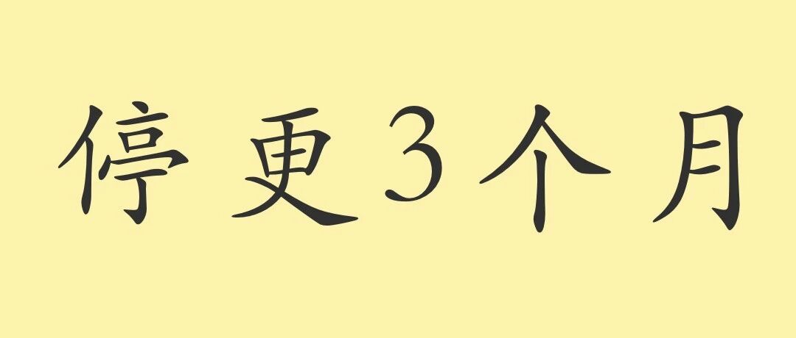

想了想，还是决定告诉大家
原创
秋秋
秋秋
秋秋很开心
2023年07月28日 20:30
北京
在小说阅读器读本章
去阅读
在小说阅读器中沉浸阅读
点击关注
秋秋很开心
学习成长｜自我探索｜退休日常
大家好，我是秋秋呀～
熟悉我的小伙伴应该发现我最近半年更新频率降低了，本来觉得没必要
「特此通知」
，想了想，还是要对关注我的朋友负责。
那就正式宣布，我要停更
3
个月了。
是没东西写了？变懒了？有意外情况？
都不是！
我每个月都有热情写很多东西，也会看书做笔记，还有生活好物、碎碎念可以分享。
那为什么不发出来？还说你要断更？
好狠心的女人啊 :(
_
有三个原因：
1.
心理负担
说出来大家也能理解，学生时代，有时候你成绩越好反而越害怕、
不敢轻易表现了。
我公众号量级不算大，但写文章时，也有不一致的评论。
文章发出来有错误，也会无地自容，心想：
怎么这么不细心不完备啊。
慢慢心里有小包袱，写的就不轻松了。
2.
方向变更
我账号定位挺明确，记录成长和大家一起成长。
一开始写学习文具，现在写退休生活，
方向上有个转型。
我想平衡这两个，却发现根本无法控制！
喜欢的东西能写
100
篇，不想研究的事干脆摆烂。
最终两个都没搞好，内心的秩序也被打破了，一打破我也混乱了，就无法继续写。
说到这里咋觉得我事真多？你想写哪个方向就写好了，想那么多干啥 ><
（可是有的用户想看手帐便签啊；那有的还只想看赚钱存钱方法呢
（要疯了，干脆
....
不写了
3.
没有束缚
说这么多都是借口！
你以前就没这些问题吗？其他博主都能平衡！
以前有！
但坦诚的说，
那时候我还想赚钱。
现在一纠结、一生气、一内耗，身体就不好，明显的感觉胸口堵着一口气顺不下去。
就像抑郁症是大脑生理性的病变，这种情绪反应也不是你说消消气就能好的。
一旦郁结，只能吃药。
这样就觉得维持我内心的平静比赚钱重要，最后一层束缚也没了。
-
看到这，都和“我不喜欢写作”、“我没灵感”、“我偷懒”
无关。
我还是很喜欢写！也想了解决方法！
只要发自内心写干货内容，就无所谓负担和选题了。
那写书，是很好的方式，
我就开始集中注意力
写，才发现
，我的语言真的匮乏！
现在就是看书、写书，足够忙碌了。
（开始系统性的写书）
-
说回停更，
我是想用
3
个月的时间好好看书，集中写作。
这期间没反馈、没“失误”，也没钱赚，反而有利于我创作。
写完了，可能会出版。
可能不会（时过境迁），但最坏的结果也有
10
万字以上的成品。
大概
100
篇文章，明年也能多和大家见面了！还是系统性的干货输出
！
-
当然，我也害怕大家忘了我，之后流量不好。
但再做视频延续之前的写作，都不会让我进步很多，只是在熟悉的领域摩擦。
适当的留白和输入，不断探索，才是我持续创作的法宝吧
。
停更，不是做自媒体不赚钱了，或博同情说我们
太累了，压力好大（反而觉得能做自己喜欢的事又能赚钱是幸运的）。
是想趁年轻有选择的时候，沉下心来打磨一下。
暂定
11
月份回归，为了“慰藉”会想
我的朋友，小号会分享下我的日常和碎碎念，还是那个热情有活力在进步的秋秋。
🌙
那 停更期间
小 号 见
不用特意关注
知道我还在就行